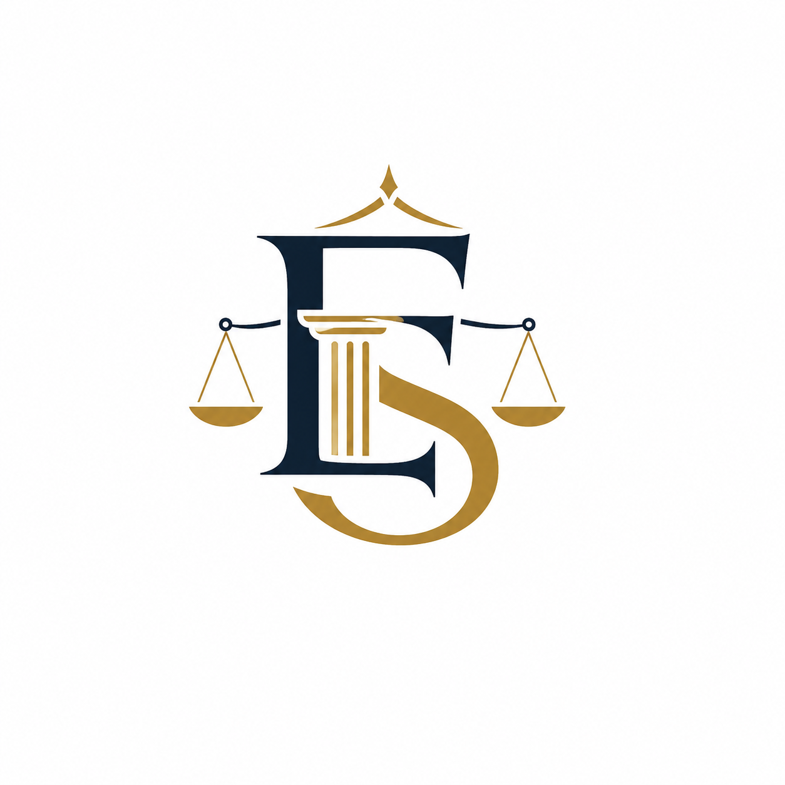

IDEIAS DA MARCA


Propostas de Logotipo
Trouxemos algumas ideias para a sua nova marca, focadas em chamar a atenção de donos de grandes empresas.
Opção 1 (Minimalista)
Opção 2 (Premium)
Opção 3 (Clássica)
Opção 4 (Monograma)

Opção 5 (Pilar)
O que nós recomendamos: Como conversamos, as duas primeiras opções transmitem uma imagem muito mais moderna, de alta performance e totalmente focadas em atrair os grandes empresários. Elas eliminam aquela cara de "advogado convencional" que não chama mais a atenção na internet.
↓ Role para baixo